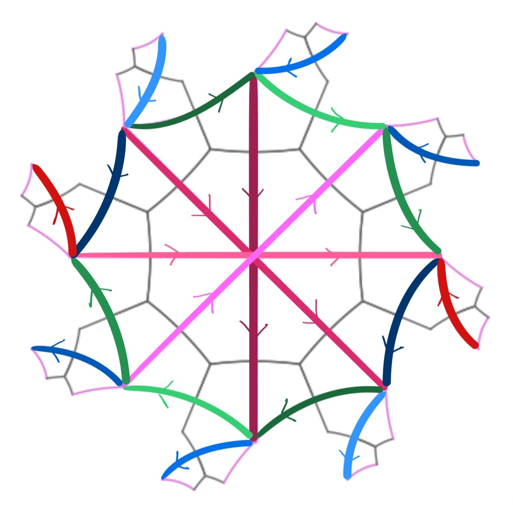
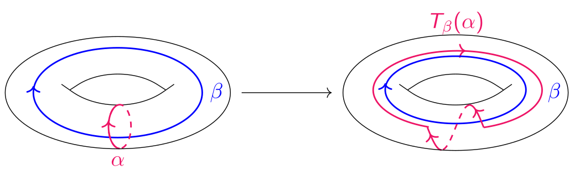
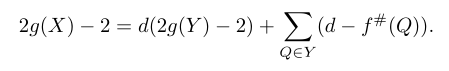
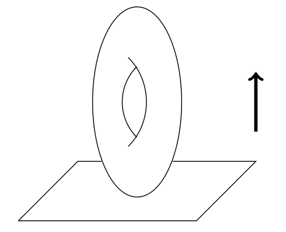

Below are some notes and reports I've written over time. Read at your own risk (and please let me know if you find any mistakes!).

Master's thesis
"Sobre la acción del grupo de automorfismos de una superficie de Riemann compacta sobre el conjunto de sus sístoles", 2026(PDF) (Defense).
I reimplemented a computational routine to obtain bounds on the systolic length and kissing number of genus-two (compact) surfaces, starting from an abstract group action. Here is the GitHub repository.
Advisor: Prof. Anita Rojas, Universidad de Chile.

Undergraduate thesis
"Mapping class group de superficies", 2023( PDF) (Presentation).
I focused on the case of the torus, specially on how curves' intersection patterns relates to the relations of the group.
Supervisor: Prof. Mauricio Bustamante Londoño, Pontificia Universidad Católica de Chile.

Investigación de Pregrado en Verano
"La fórmula de Riemann-Hurwitz", 2023 (PDF)I studied the formula from the divisor's viewpoint. I applied it to compute the genus of an elliptic curve.
Supervisor: Prof. Natalia García-Fritz, Pontificia Universidad Católica de Chile.

Investigación de Pregrado en Invierno
"Teoría de Morse y aplicaciones en topología", 2022(PDF) ( UCH students seminar).
I defined suitable Morse functions to compute the Euler characteristic of Grassmannian manifolds.
Supervisor: Prof. Mauricio Bustamante Londoño, Pontificia Universidad Católica de Chile.